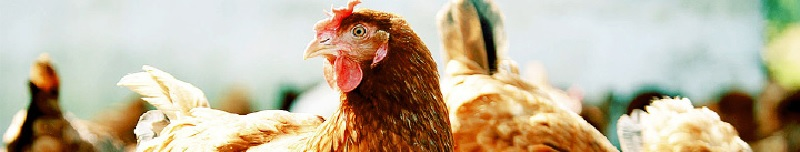

<nav class="navbar navbar-expand-lg navbar-dark bg-dark">
  
  <button
    class="navbar-toggler"
    type="button"
    data-toggle="collapse"
    data-target="#navbarSupportedContent"
    aria-controls="navbarSupportedContent"
    aria-expanded="false"
    aria-label="Toggle navigation"
  >
    <span class="navbar-toggler-icon"></span>
  </button>

  <div class="collapse navbar-collapse" id="navbarSupportedContent">
    <ul></ul>
    <ul></ul>
    <ul class="navbar-nav mr-auto">
      <li class="nav-item">
        <a class="nav-link button" [routerLink]="['/inicio']">Inicio</a>
      </li>

      <li class="nav-item dropdown">
        <a
          class="nav-link dropdown-toggle button"
          id="navbarDropdown"
          role="button"
          data-toggle="dropdown"
          aria-haspopup="true"
          aria-expanded="false"
        >
          Quiénes Somos
        </a>
        <div class="dropdown-menu" aria-labelledby="navbarDropdown">
          <a class="dropdown-item" [routerLink]="['/mision']">Misión</a>
          <div class="dropdown-divider"></div>
          <a class="dropdown-item" [routerLink]="['/vision']">Visión</a>
        </div>
      </li>

      <li class="nav-item">
        <a class="nav-link button" [routerLink]="['/servicios']"
          >Nuestros Servicios</a
        >
      </li>
      <li class="nav-item">
        <a class="nav-link button" [routerLink]="['/contactos']">Contactos</a>
      </li>
    </ul>
    <form class="form-inline my-2 my-lg-0">
      <button
        class="btn btn-outline-primary my-2 my-sm-0"
        [routerLink]="['/registrarse']"
      >
        Registrarse
      </button>
      <button
        class="btn btn-outline-primary my-2 my-sm-0"
        [routerLink]="['/login']"
      >
        Iniciar Sesion
      </button>
    </form>
  </div>
</nav>

<div class="registro">
  <div class="container">
    <div class="titulo">Nuestra Misión</div>
    <div>  </div>
    <div class="texto">
      Criar y producir pollos en condiciones óptimas por medio de un eficiente proceso productivo, con la colaboración de nuestro personal capacitado podemos brindar un producto de alta calidad preservando el medio ambiente.
    </div>
  </div>
</div>
